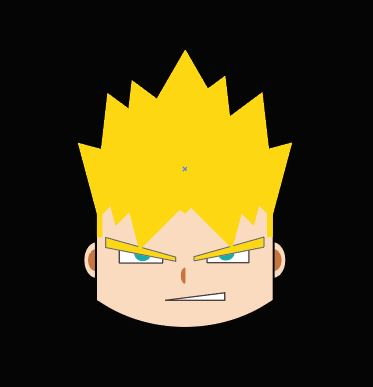

Creació final de la cara del personatge Goku.
Juntament amb moviment del cabell, ulls i boca. I això, per detectar el so.

Realització d'un esboç de la cara.
Idea realitzada amb l'Adobe Ilustraitor.
Projecte inspirat en el protagonista de la sèrie "Bola de Drac".
Per tant, aquesta imatge és un clar exemple del resultat.